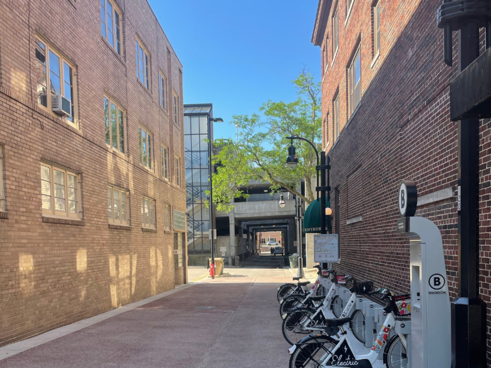
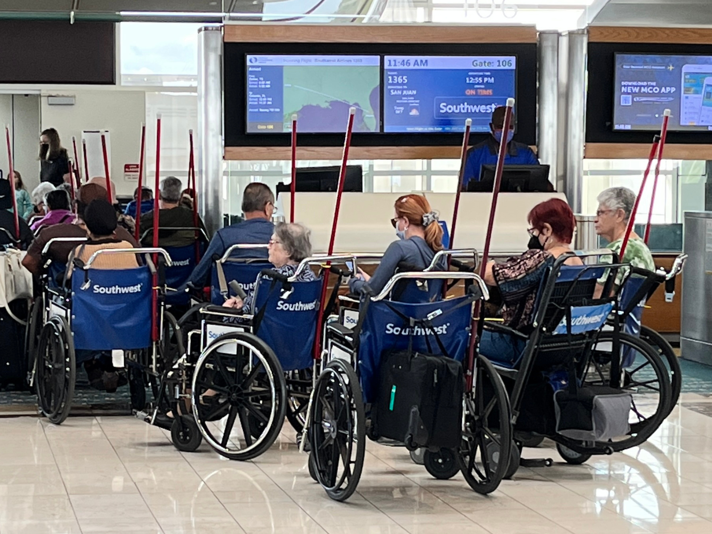

Samvida Chennuri
Catalyzing equity
and accountability
in
everyday systems
through service design.
DESIGN STRATEGIST • SERVICE DESIGNER • RESEARCHER • SUSTAINABILITY EXPERT • INNOVATOR • SYSTEMS THINKER • STORYTELLER •
DESIGN STRATEGIST • SERVICE DESIGNER • RESEARCHER • SUSTAINABILITY EXPERT • INNOVATOR • SYSTEMS THINKER • STORYTELLER •
My design trifecta for Circular, Ethical, and Community-driven solutions:
Empathize
- Ask why systems the way they do and why they cannot better
- Dig into behaviors, structures, and lived experiences
- Uncover the gaps, frictions, and opportunities that shape meaningful interactions
Simplify
- Map out journeys, processes, and relationships to cut through complexity and ambiguity.
- Find the root problems beneath surface-level symptoms
- Reframe fragmented systems into clear and actionable design strategies for change
Innovate
- Design services, systems, and experiences that are equitable, adaptable, and regenerative
- with people to shape ideas that last and benefit more than just the present.
- Create meaningful change that s in the real world
Projects

Resale, reinvented for India
Creating Regrab to cater to India’s dynamic resale market with the unique local touch global platforms lack.

Spatial Design
An alley you’d want to walk through
Transforming Hawthorne Court into a safe, inviting, and vibrant community space for Downtown Madison.

Service Design
Cracking the code to smoother takeoffs
Improving boarding for passengers with reduced mobility and cutting turnaround times for Southwest Airlines.

Milwaukee becomes the haven
Imagining the everyday lived experiences of climate migrants in a future city reshaped by refuge and resilience.

Reading Between the Green Lines
Infographics that thoughtfully simplify complex research, systems, and strategies into clear, engaging visuals.
Research papers and articles archive
A collection of research papers and articles that highlight my research skills, writing abilities, and areas of interest.